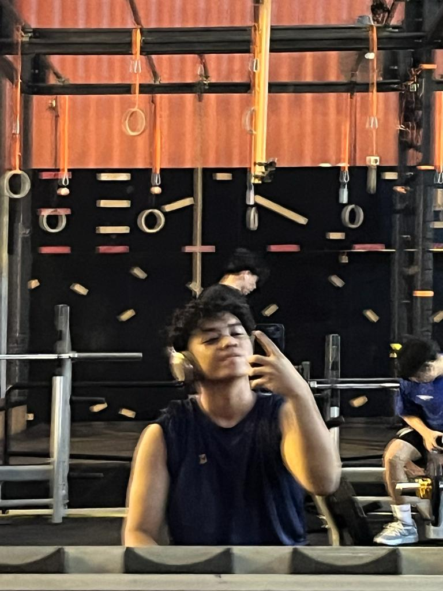
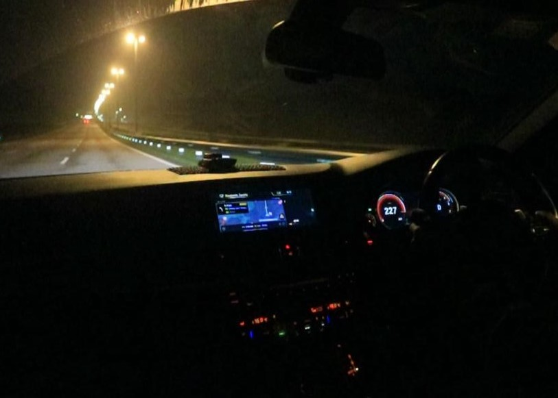

Hobby 1: Playing Table Tennis

Table tennis is a great way to stay active and have fun with friends and family. Whether it's a friendly match or a competitive game, it's always a thrilling experience.
Hobby 2: Going to the Gym
Working out at the gym helps me stay fit and healthy. It's not just about physical strength but also mental well-being. Plus, achieving fitness goals gives a sense of accomplishment.
Hobby 3: Going on Late Night Drives
There's something magical about late-night drives. The empty roads, cool breeze, and peaceful atmosphere make it the perfect way to unwind and clear my mind after a long day.